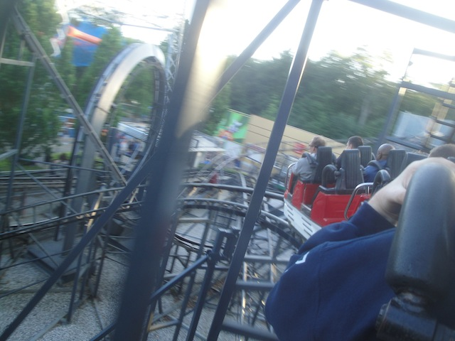
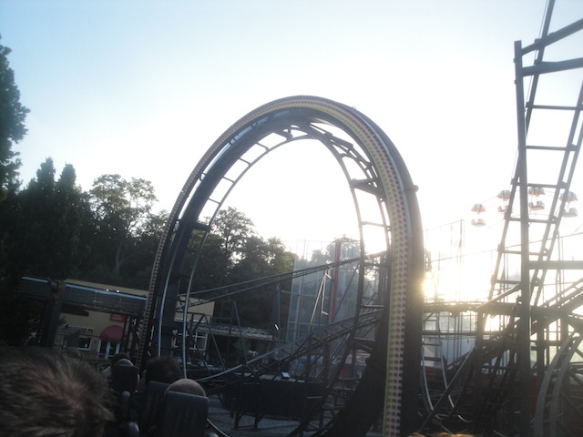

| |
Orkanens Øje Review

For today's review, we're going back in time to ride Orkanens Øje back when it was at Tivoli Friheden. This coaster still exists, but it got moved to a place called Baghdad Island (it currently doesn't have a new name, so I'm still calling it by its old name). But we're *groan* Yep, we're reviewing a Pinfari Looper today. And to make things worse, this is one of the more painful ones. Oh joy. After getting in the trains and pulling down the OTSRs, we're off. You go around a turn and begin to climb the lifthill. We pretty much get a decent view of Tivoli Friheden, which isn’t that special to look at. But whatever, we crest the lifthill, go around a turn, and away we go. We head down the first drop. Wee!! Not that bad. Definetly the best part of the ride. We then rise up, and head down this curved drop. Yeah, you get a nice good SMACK here. OUCH!!! So anyways, down the spiral drop and INTO THE LOOP!!! Yep, it’s a Looping Pinfari, and we tumble upsidedown. Fun little loop. Hope you enjoyed that because nothing else is good about this ride. We then rise up a small hill and into a sharp turn. SLAM!!! OUCH!!! We then head around a turn, through some straight track, and then head down another little curved drop. Wee. SLAM!! We head around a banked turn to the ground before going through this tiny little banked hill. No, it’s not that fun. It’s mostly just awkward and kind of painful. The restraints on this ride are NOT smooth. It’s banked to the left, goes to normal at the top, and then banks to the other side coming down. And it hurts. SH*T!!! Down the hill, banked and immediately go into a sharp banked turn. Oh joy. Another moment of headbanging. You can see why enthusiasts love this ride so much. Head up another awkward little hill before rolling throughs some straight track, along with some trims. Yippee. Roll through this big turn, and glide into the brake run. So yeah. Orkanens Øje is a bad ride. Like all Pinfaris that aren't kiddy coasters, it feels like it was made with chewing gum and rubber bands. And this is one of the bad ones. Yeah, some of them can be mildly fun, but this one just flat out sucks. I don't care that it left Tivoli Friheden. But if you do, it found a new home at Baghdad Island. No, that's not a theme park themed to Iraq. This coaster is now currently being rebuilt in Iraq. Eh...hey, at least this park is getting something.
4/10
Location: Baghdad Island
Opened at Tivoli Friheden in 1986
Moved to Baghdad Island in 2019
Built by: Pinfari
Last Ridden: June 19, 2014
I have ridden this exact same ride at the following parks.
Sommerland Sjaelland
Orkanens Øje Photos


Home
|